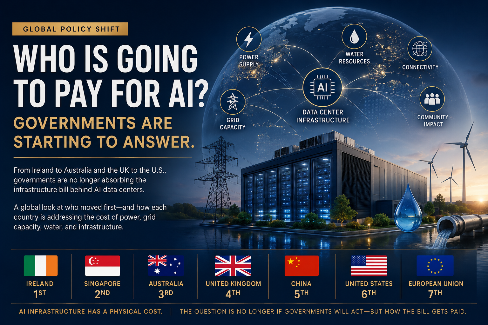
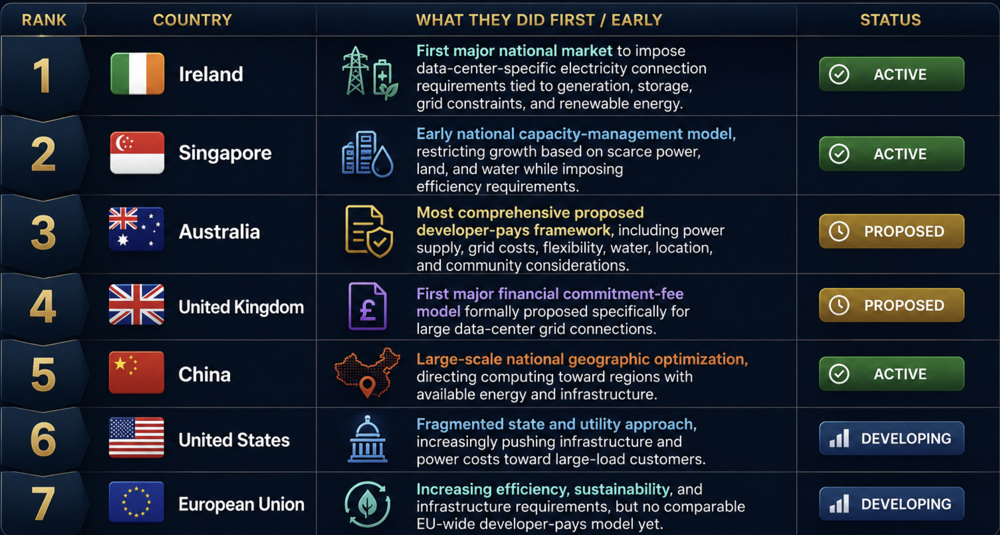

The economics of AI infrastructure are changing.
We already know large data centers are creating demand for electricity, grid capacity, water, land, connectivity, and skilled labor at a scale that can affect national infrastructure planning. Governments are increasingly deciding that this demand cannot simply be accommodated through existing infrastructure and ultimately absorbed by households, businesses, or taxpayers.
Different countries are taking different approaches.
Some are directing compute toward regions with available resources. Some are limiting new capacity. Some are requiring developers to provide generation or storage. Others are creating financial mechanisms designed to make developers accountable for the grid capacity they reserve.
Australia is now proposing the broadest national framework of the group.
Global Data Center Infrastructure Policy: Who Moved First?

The ranking is based on the specific infrastructure-policy mechanisms described above, not on which country has the most comprehensive data-center regulation overall.
The countries are not pursuing identical policies. They are addressing the same underlying problem through different mechanisms.
1. Ireland made grid access conditional
Ireland provides one of the clearest examples of a government requiring data-center developers to address the infrastructure demands created by their projects.
Data centers accounted for 22% of Ireland's national electricity demand in 2024, up from 5% in 2015. Under contracted demand, the Commission for Regulation of Utilities projects that data-center consumption could reach 31% of national electricity demand by 2034.
In December 2025, Ireland finalized a new electricity connection policy for data centers.
New data centers connecting to the electricity network are required to provide generation and/or storage capacity capable of matching their requested maximum import demand capacity. That generation or storage can be located on-site or nearby and must participate in the wholesale electricity market.
The policy also requires data centers to meet at least 80% of annual electricity demand through additional renewable electricity projects in Ireland. Grid operators must consider network constraints and the availability of generation when evaluating proposed connections.
Ireland did not simply ask whether the grid could accommodate another data center. It established requirements for the developer to contribute to the energy system supporting that facility.
Status: Active.
2. Singapore treated capacity as a national resource
Singapore took a different approach.
The country's constraints are straightforward. It has limited land and significant requirements for electricity and water. Data centers are also strategically important to Singapore's digital economy.
Rather than allowing capacity to expand without limits, the government has used controlled allocation and sustainability requirements to manage growth.
In 2023, Singapore introduced a pilot Data Centre Call for Application process, selecting projects based partly on their strategic value, economic contribution, sustainability, and ability to support the country's digital infrastructure objectives.
In 2024, Singapore launched its Green Data Centre Roadmap. The roadmap targets at least 300 MW of additional data-center capacity in the near term, with further capacity potentially enabled through green-energy deployments. It also focuses on energy efficiency, green energy, and water efficiency.
Singapore's model is different from Ireland's. It is less about making developers pay a specific infrastructure bill and more about controlling how much additional data-center capacity enters a constrained national system.
Status: Active.
3. Australia is combining the requirements
Australia is now proposing the most comprehensive national framework in this group.
In July 2026, the Australian government announced proposed Australian Standards for AI that would include specific requirements for large data centers.
The proposed standards would establish legal obligations for large facilities to underwrite their own new power supply, pay their full share of grid connection costs, reduce power consumption when needed to support the grid, maximize energy efficiency, and minimize water use.
The government also intends to require data centers to pay for additional water infrastructure where necessary and to work with state and local governments on appropriate facility locations and community considerations.
Australia is not addressing only electricity connections. It is attempting to establish national requirements covering power, grid costs, energy flexibility, water, location, and community impacts within one framework.
The Australian government has stated that the standards are expected to be considered by National Cabinet in August and legislated in early 2027.
Status: Proposed, not yet enacted.
4. The UK is putting money behind grid commitments
The United Kingdom is approaching the problem through grid access and financial accountability.
Ofgem has proposed a Data Centre Commitment Fee for qualifying data-center projects seeking grid connections. The proposed mechanism would require developers to put money behind their connection commitments, with the fee refundable when projects reach energization and potentially forfeited if projects leave the queue prematurely. The purpose is to reduce speculative projects occupying scarce grid capacity.
This matters because the UK's connection queue contains a significant volume of large-load demand, including data centers. Ofgem's reforms are designed to prioritize projects that demonstrate genuine progress and the ability to deliver.
The UK's approach is narrower than Australia's proposed framework. But it establishes an important principle: grid capacity has economic value, and developers seeking to reserve it should demonstrate a financial commitment to the project.
Status: Proposed.
5. China used national infrastructure planning
China addressed the problem through geographic planning.
Its East Data, West Computing strategy established national computing hubs and data-center clusters designed to align computing capacity with regional resources and infrastructure.
The objective was not primarily to make data-center developers pay for incremental grid infrastructure.
Instead, China used national planning to place computing capacity in locations where energy, land, and other infrastructure resources could better support it. Rather than asking how to bring more infrastructure to every location where compute demand exists, China asked where compute should be located in the first place.
Status: Active.
6. The United States is addressing cost allocation
The United States does not have a single national developer-pays framework for data centers.
The response is developing through federal regulators, regional transmission organizations, utilities, states, and individual jurisdictions.
The Federal Energy Regulatory Commission has taken a significant step in this direction.
FERC's 2026 large-load orders require Cost Recovery Agreements designed to ensure that large loads pay their share of the infrastructure costs incurred to serve them, even if the projected load does not ultimately come online as planned.
FERC specifically identified the risk that infrastructure built for a data center could otherwise leave residential customers responsible for the costs if the facility does not materialize.
This is a different version of the developer-pays principle. The objective is not necessarily to require the data center to build its own power generation. It is to prevent large-load infrastructure costs from being transferred to customers who did not create the demand.
Status: Developing through federal and regional regulatory mechanisms.
7. The European Union is addressing efficiency, not yet a unified developer-pays model
The European Union has moved toward data-center energy and sustainability requirements, including energy-performance reporting and efficiency measures.
However, the EU does not currently have a single framework comparable to Australia's proposed approach requiring large data-center developers to assume responsibility for their incremental power, grid, and water infrastructure costs.
Europe is addressing the resource efficiency of data centers, while individual countries and utilities are dealing with the physical constraints around where new capacity can actually be connected.
The result is a more fragmented model.
Status: Developing.
What the progression tells us
These countries are using different mechanisms, but the policy progression is becoming clear.
China: Where should compute be located?
Singapore: How much additional capacity can a constrained system support?
Ireland: What infrastructure should accompany a new data-center connection?
Australia: Who should pay for the energy, grid, water, and location impacts?
United Kingdom: How financially committed is a developer before it receives scarce grid capacity?
United States: How do regulators prevent large-load infrastructure costs from being transferred to other customers?
The telecom infrastructure cannot be separated from the AI infrastructure
There is another component that deserves attention.
AI data centers depend on high-capacity connectivity between facilities, cloud regions, enterprises, users, and other compute environments. That means fiber routes, carrier diversity, subsea connectivity, latency, redundancy, and network resilience are part of the same infrastructure equation.
A facility with sufficient electricity but inadequate connectivity is still constrained. For enterprises deploying AI across multiple regions, this creates a practical architectural consideration.
The logical AI environment may be global. The physical infrastructure supporting it is increasingly local. That means infrastructure strategy, cloud strategy, telecom strategy, and AI strategy are becoming more closely connected.
The policy question is moving from "Can we build it?" to "Who pays?"
Governments previously focused primarily on attracting data centers because they bring investment, jobs, tax revenue, and digital infrastructure.
But the scale of AI infrastructure is changing the cost-benefit calculation.
When a single development can require hundreds of megawatts of electricity and substantial new grid infrastructure, the question becomes whether the broader public should finance infrastructure that primarily enables a private commercial project.
Ireland has responded by requiring supporting generation and storage. Australia is proposing direct obligations around power, grid costs, water, and flexibility. The UK is proposing a financial commitment mechanism for grid capacity. FERC is addressing cost recovery for large loads.
These policies differ, but they move in the same direction.
The infrastructure costs created by large AI workloads are increasingly being assigned to the parties creating the demand.
What enterprises should take from this
Enterprise technology engineers should consider infrastructure policy when evaluating AI architectures, cloud regions, and long-term capacity requirements.
Questions worth asking include:
Where is our AI compute physically located?
The answer should include the underlying region and infrastructure environment, not simply the name of the cloud provider.
What are the local power and water constraints?
Capacity that exists on paper may not be available for new development.
How flexible are our workloads?
If a jurisdiction introduces demand-response requirements or infrastructure constraints, the ability to move or reduce workloads may have economic value.
How geographically portable is our architecture?
Regulatory and infrastructure requirements will not necessarily be identical across countries.
Who ultimately absorbs infrastructure costs?
Higher grid costs, infrastructure contributions, connection fees, and energy requirements can eventually affect the economics of cloud and AI capacity.
The NVG perspective
The important development is not that governments are regulating data centers. Governments have regulated infrastructure for decades. The important development is that AI data centers are increasingly being treated as infrastructure with national resource consequences.
Ireland has established active requirements tying new data-center connections to generation, storage, renewable energy, and grid constraints. Singapore is managing additional capacity around energy, water, and land limitations. China has used national planning to align compute with available infrastructure and resources.
Australia is proposing a comprehensive national framework that would make large data centers responsible for new power supply, grid connection costs, energy flexibility, water efficiency, and additional water infrastructure. The UK is proposing a financial commitment mechanism for scarce grid capacity. The United States is moving toward stronger cost-recovery protections for large-load infrastructure.
The approaches are different.
The direction is not.
Sources & Further Reading
- Australian Government, Office of the Prime Minister, "AI in Australia's Interests," July 15, 2026.
- Commission for Regulation of Utilities, Ireland, "New Electricity Connection Policy for Data Centres," February 18, 2025.
- Commission for Regulation of Utilities, Ireland, "The CRU Publishes Its Decision on New Electricity Connection Policy for Data Centres," December 12, 2025.
- Infocomm Media Development Authority, Singapore, "Green Data Centre Roadmap," May 2024.
- Infocomm Media Development Authority, Singapore, "Data Centre Call for Application and Digital Infrastructure Planning."
- Federal Energy Regulatory Commission, "Large Load Cost Recovery Agreements," 2026.
- Ofgem, "Proposed Data Centre Connection Reforms," July 29, 2026.
- Ofgem, "Ofgem Acts to Free Up Grid Capacity by Tackling Speculative Data Centre Projects," July 29, 2026.
- National Development and Reform Commission of China, "Guidance on Accelerating Construction of a National Integrated Big Data Center Collaborative Innovation System," December 28, 2020.
- National Development and Reform Commission of China, "Implementation Plan for the National Integrated Big Data Center Collaborative Innovation System Computing Hubs," May 24, 2021.
- European Commission, "Energy Performance of Data Centres."
- European Commission, "Commission Adopts EU-Wide Scheme for Rating Sustainability of Data Centres," March 15, 2024.
Information current as of August 25, 2026. Several of the policies described above are proposed or under regulatory consideration and may change.
Disclosure: This article represents the analysis and perspective of North Velocity Group based on publicly available government, regulatory, and industry sources. The status of policies varies by jurisdiction. Some measures discussed are proposed or under regulatory consideration and may change before implementation. North Velocity Group provides technology infrastructure, telecommunications, transformation, and governance advisory services. This article is provided for informational purposes only and does not constitute legal, regulatory, financial, investment, or energy-market advice.